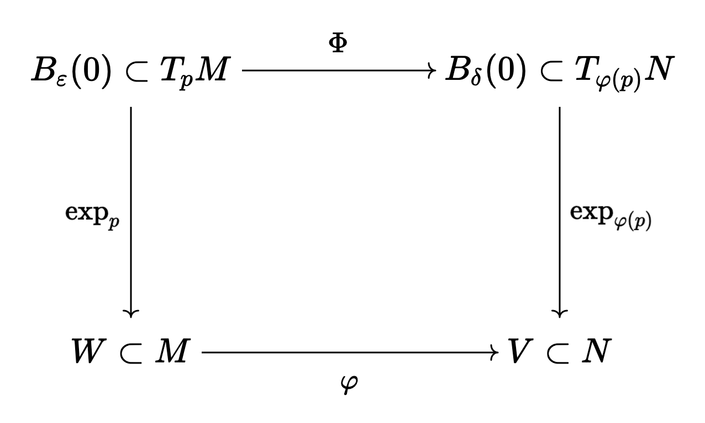

A complete proof of the Myers-Steenrod theorem
Table of Contents
Originally published: May 6th, 2025
1. Introduction
Recall that if \((M, g)\) and \((N, \widetilde{g})\) are Riemannian manifolds, a Riemannian isometry \(\varphi : M \rightarrow N\) is a diffeomorphism which preserves the metric, \(\varphi^{*} \widetilde{g} = g\). On the other hand, since \(M\) and \(N\) are metric topological spaces with distance functions induces by their metrics, we can speak of a metric isometry \(\varphi : M \rightarrow N\), which is a continuous map of topological spaces such that \(d_N(\varphi(p), \varphi(q)) = d_M(p, q)\) for all \(p, q \in M\). The Myers-Steenrod theorem is a somewhat incredible result in Riemannian geometry which states that these two notions of an isometry are equivalent. One direction (Riemannian isometry implies metric isometry) is quite easy, and the other direction is much harder.
After some digging, it doesn't seem like anyone has really put online a proof of Myers-Steenrod which goes through all of the necessary details. The writings that do exist are sketches (the best one can be found on none other than Akhil Mathew's famous Climbing Mount Bourbaki!). My contribution with this blog post is to turn these sketches into a comprehensive explanation (which I hope someone finds useful down the line, if they ever find this blog).
Finally, thank you to Prof. Fedya Manin at UofT, for introducing me to this problem!
2. The easy direction
Let us begin with the easy direction, which simply involves invoking definitions, more or less. Suppose \(\varphi : (M, g) \rightarrow (N, \widetilde{g})\) is a Riemannian isometry, so it is a diffeomorphism which preserves the metric. If \(\gamma\) is an admissible curve in \(M\) (piecewise smooth with non-vanishing velocity vector), then \(\widetilde{\gamma} = \varphi \circ \gamma\) is an admissible curve in \(N\). Similarly, if \(\gamma\) is an admissible curve in \(N\), \(\varphi^{-1} \circ \gamma\) is an admissible curve in \(M\).
Let \(L_M\) be the length function for \(M\), let \(L_N\) be the length function for \(N\). We have
\begin{align} L_M(\gamma) = \int_{a}^{b} \sqrt{g_{\gamma(t)}(\dot{\gamma}(t), \dot{\gamma}(t))} \ dt &= \int_{a}^{b} \sqrt{\varphi^{*}(\widetilde{g})_{\gamma(t)}(\dot{\gamma}(t), \dot{\gamma}(t))} \ dt \\ &= \int_{a}^{b} \sqrt{\widetilde{g}_{(\varphi \circ \gamma)(t)}(\varphi_{*}\dot{\gamma}(t), \varphi_{*}\dot{\gamma}(t))} \ dt \\ &= \int_{a}^{b} \sqrt{\widetilde{g}_{(\varphi \circ \gamma)(t)}(\dot{\widetilde{\gamma}}(t), \dot{\widetilde{\gamma}}(t))} \ dt = L_N(\varphi \circ \gamma) \end{align}Therefore, given \(p\) and \(q\) in \(M\), we note that
\begin{align} d_M(p, q) = \inf \{ L_M(\gamma) \ | \ \gamma(a) = p, \gamma(b) = q\} &= \inf \{ L_N(\varphi \circ \gamma) \ | \ \gamma(a) = p, \gamma(b) = q\} \\ &\geq \inf \{L_N(\gamma) \ | \ \gamma(a) = \varphi(p), \gamma(b) = \varphi(q)\} = d_N(\varphi(p), \varphi(q)) \end{align}where we are taking the infimum over admissible curves \(\gamma\) between \(p\) and \(q\) on the first line, and the infimum over admissible curves between \(\varphi(p)\) and \(\varphi(q)\) on the second line. We also have, similarly,
\begin{align} d_N(\varphi(p), \varphi(q)) = \inf \{L_N(\gamma) \ | \ \gamma(a) = \varphi(p), \gamma(b) = \varphi(q)\} &= \inf \{L_M(\varphi^{-1} \circ \gamma) \ | \ \gamma(a) = \varphi(p), \gamma(b) = \varphi(q)\} \nonumber \\ & \geq \inf \{L_M(\gamma) \ | \ \gamma(a) = p, \gamma(b) = q\} = d_M(p, q) \end{align}so that \(d_M(p, q) = d_N(\varphi(p), \varphi(q))\), implying that \(\varphi\) is a isometry in the metric sense.
3. The hard direction
Now comes the main attraction. Before proceeding, we need a particular construction which is stronger than the existence of uniformly normal coordinates. This is Theorem 6.17 of the 2nd edition of Lee's Riemannian geometry textbook, and its proof is assigned as a multi-step problem in the 1st edition.
Definition 1. We say that an open subset \(U \subset M\) is geodesically convex if for every \(p, q \in U\), there exists a unique minimizing geodesic segment from \(p\) to \(q\) wtih image lying entirely in \(U\).
Theorem 1. If \((M, g)\) is a Riemannian manifold, for each \(p \in M\), there is a \(\varepsilon_0 > 0\) such that every geodesic ball centred at \(p\) of radius less than or equal to \(\varepsilon_0\) is geodesically convex. We call such a ball a convex geodesic ball.
Let us begin with an important result:
Proposition 1. A metric isometry \(\varphi : (M, g) \to (N, \widetilde{g})\) sends geodesics into other geodesics. To be more precise, if \(\gamma : [0, 1] \rightarrow M\) is a geodesic in \(M\) with \(\gamma(0) = p\) and \(U\) is a sufficiently small convex geodesic ball around \(p\), then every point in the curve, \(\gamma(t)\), inside \(U\) is sent to the image of some \(\widetilde{\gamma} : [0, 1] \rightarrow N\), a geodesic in \(N\) with \(\widetilde{\gamma}(0) = \varphi(p)\).
The main idea for proving this result is to use the notion of a geodesic "aiming at'' a point, which was used in the proof of Hopf-Rinow. Crucially, we are not allowed to use smoothness of \(\varphi\), as we only have the much weaker a priori assumption that it is continuous.
Proof. Pick some convex geodesic ball \(V = \exp_{\varphi(p)}(B_{\varepsilon}(0))\) around \(\varphi(p)\). Since \(\varphi\) is continuous, we can pick a small convex geodesic ball \(U = \exp_{p}(B_{\delta}(0))\) around \(p\) such that \(\varphi(U) \subset V\). Let us pick some \(q \in U\) so \(\varphi(q) \in \varphi(U)\). Note that from Lee's book, the radial geodesic \(\gamma\) from \(\gamma(0) = p\) to \(\gamma(1) = q\) in \(U\), and the radial geodesic \(\widetilde{\gamma}\) from \(\widetilde{\gamma}(0) = \varphi(p)\) to \(\widetilde{\gamma}(1) = \varphi(q)\) are both the unique minimizing admissible curves between these points.
Suppose \(x\) is a point of \(V\) such that \(d(\varphi(q), \varphi(p)) = d(\varphi(q), x) + d(x, \varphi(p))\). Let \(\widetilde{\gamma}_1\) be the minimizing geodesic in \(V\) connecting \(\varphi(q)\) and \(x\), and let \(\widetilde{\gamma}_2\) be the minimizing geodesic in \(V\) connecting \(x\) and \(\varphi(p)\). The concatenation of these curves is itself admissible, and has length \(d(x, \varphi(q)) + d(x, \varphi(p))\), which is precisely \(d(\varphi(q), \varphi(p))\): the length of the minimizing geodesic \(\widetilde{\gamma}\). It follows from uniqueness of this minimizing curve that \(\widetilde{\gamma}\) must be equal to this concatenation, up to reparametrization, so \(x\) must lie in the image of \(\widetilde{\gamma}\).
From here, we can show that if we pick some point \(\gamma(t)\) on the minimizing geodesic \(\gamma\), then \(d(p, q) = d(p, \gamma(t)) + d(\gamma(t), q)\). The reason for this is that \(L(\gamma) = L(\gamma|_{[0, t]}) + L(\gamma|_{[t, 1]})\). Note that \(L(\gamma) = d(p, q)\) and \(L(\gamma_{[0, t]}) = d(p, \gamma(t))\), as \(\gamma|_{[0, t]}\) is the minimizing radial geodesic from \(p\) to \(\gamma(t)\). Thus,
\begin{equation} d(\gamma(t), q) \leq L(\gamma|_{[t, 1]}) = L(\gamma) - L(\gamma|_{[0, t]}) = d(p, q) - d(p, \gamma(t)) \leq d(\gamma(t), q) \end{equation}so \(L(\gamma|_{[t, 1]}) = d(\gamma(t), q)\), and we have the equality. It follows that
\begin{align} d(\varphi(p), \varphi(q)) = d(p, q) &= d(p, \gamma(t)) + d(\gamma(t), q) = d(\varphi(p), \varphi(\gamma(t)) ) + d(\varphi(\gamma(t)), \varphi(q)) \end{align}so it follows from what we proved earlier that \(\varphi(\gamma(t))\) must lie on the geodesic \(\widetilde{\gamma}\).
Now, note that be uniqueness of geodesics, any geodesic through \(p\) will necessarily be one of the radial geodesics in \(U\) when restricted to this neighbourhood. Moreover, points lying on the same radial geodesic are sent by \(\varphi\) to the same radial geodesic in \(V\). This gives the desired result. \(\blacksquare\)
From here, we will attempt to define a map \(\Phi\) which makes the following diagram commute:

Let \(p\) be a point in \(M\), so \(\varphi(p) \in N\). Note that \(\exp_{\varphi(p)}\) is a local diffeomorphism around the origin, so we can choose some neighbourhood \(B_{\delta}(0) \subset T_{\varphi(p)} N\) (distance is taken relative to the inner product \(\widetilde{g}_{\varphi(p)}\) induced by the metric as usual) where \(\exp_{\varphi(p)} : B_{\delta}(0) \rightarrow V\) is a diffeomorphism. Moreover, we can assume \(\delta\) is small enough such that \(V\) is a convex geodesic ball. Since \(\varphi\) and \(\exp_p\) are both continuous, \(U = \exp_p^{-1}(\varphi^{-1}(V))\) is open in \(T_p M\), and clearly contains \(0\) as \(\exp_p(0) = p\) and \(\varphi(p) \in V\). Thus, without loss of generality, we can pick \(B_{\varepsilon}(0) \subset U \subset T_p M\) such that \(\exp_p(B_{\varepsilon}(0))\) is a convex geodesic ball relative to normal coordinates \(\phi = (x^1, \dots, x^n)\). These are defined as \(\phi = E^{-1} \circ \exp_p^{-1}\), where \(E(v^1, \dots, v^n) = v^j E_j\) with \(E_j\) some orthonormal basis for \(T_p M\) (relative to the inner product \(g_p\)). Moreover, we can assume that \(B_{\varepsilon}(0)\) is small enough so that the criteria in Proposition 1 is satisfied for the map \(\varphi\). We let \(W = \exp_p(B_{\varepsilon}(0))\).
From Proposition 1, note that \(\varphi\) will take points lying on the same radial geodesics in \(W\) to points lying on the same radial geodesic in \(V\). Since \(\varphi\) is a metric isometry, it is obviously injective. Moreover, we know that a point on a radial geodesic in \(W\) can be written uniquely as \(\exp_p(X)\) where \(|X|_g \in [0, \varepsilon)\) and a point in \(V\) can be written uniquely as \(\exp_{\varphi(p)}(\widetilde{X})\) for \(|\widetilde{X}|_g \in [0, \delta)\).
Definition 1. We define \(\Phi : B_{\varepsilon}(0) \rightarrow B_{\delta}(0)\) as taking \(X \in B_{\varepsilon}(0)\) to the unique \(\widetilde{X} \in B_{\delta}(0)\) such that \(\exp_{\varphi(p)}(\widetilde{X}) = \varphi(\exp_p(X))\).
Proposition 2. For scalar \(t \in [0, 1]\) and \(V \in B_{\varepsilon}(0)\) non-zero, \(\Phi(tV) = t \Phi(V)\).
Proof. Note that \(\exp_p(tV) = \gamma(t)\), a point on the geodesic \(\gamma\) with initial velocity \(V\). We know that point \(\gamma(t)\) is taken by \(\varphi\) to \(\varphi(\gamma(t)) = \widetilde{\gamma}(t')\), where \(\widetilde{\gamma}\) is a radial geodesic in \(V\). The point \(\exp_p(V)\) is taken to \(\varphi(\exp_p(V)) = \exp_{\varphi(p)}(\Phi(V))\), and moreover, this point must lie on the same geodesic \(\widetilde{\gamma}\). Since \(\exp_{\varphi(p)}(\Phi(V))\) lies on the unique radial geodesic \(s \mapsto \exp_{\varphi(p)}(s \Phi(V))\), it follows that \(\widetilde{\gamma}\) must be precisely this geodesic, and \(\widetilde{\gamma}(t') = \exp_{\varphi(p)}(t' \Phi(V))\). On the other hand, we also know that \(\varphi(\gamma(t)) = \exp_{\varphi(p)}(\Phi(t V))\), so \(t' \Phi(V) = \Phi(t V)\).
Since \(\varphi(\gamma(t)) = \widetilde{\gamma}(t')\), and \(\widetilde{\gamma}\) is locally invertible with continuous inverse, \(t'\) varies continuously with \(t\). We write \(t' = \Psi(t)\), so \(\Phi(tV) = \Psi(t) \Phi(V)\). Note that this implies \(\Psi(1) = 1\). We then have
\begin{equation} d_{\widetilde{g}}(\widetilde{\gamma}(\Psi(t)), \varphi(p)) = d_{\widetilde{g}}(\varphi(\gamma(t)), \varphi(p)) = d_g(\gamma(t), p) \end{equation}so in other words, the length of the radial geodesic extending from \(p\) to \(\gamma(t)\) must be equal to the length of the radial geodesic from \(\varphi(p)\) to \(\widetilde{\gamma}(\Psi(t))\). But we know that these lengths will just be \(|t||V|_g\) and \(|\Psi(t)||\Phi(V)|_{\widetilde{g}}\) respectively, so we have \(|\Psi(t)| = \frac{|V|_g}{|\Phi(V)|_{\widetilde{g}}} |t|\). Since \(|\Psi(t)| = 1\), it follows that \(|\Psi(t)| = |t|\), so \(\Psi(t) = t\). \(\blacksquare\)
Let us now recall a particular point from Lee, namely, that the first partial derivatives of \(g_{ij} : E^{-1}(B_{\varepsilon}(0)) \rightarrow M_{n}(\mathbb{R})\): the matrix representing the Riemannian metric in normal coordinates are all \(0\) at \(0\). Also recall from this same proposition that \(g_{ij}(0) = \mathbb{I}\).
It follows from the definition of the derivative that in a neighbourhood \(A\) of \(0 \in E^{-1}(B_{\varepsilon}(0)) \subset \mathbb{R}^n\), we will have
\begin{equation} g_{ij}(h) = g_{ij}(0) + Dg_{ij}(0) \cdot h + F(h) \end{equation}where \(F(h)\) is smooth and \(\lim_{h \to 0} \frac{F(h)}{||h||} = 0\). Since \(Dg_{ij}(0) = 0\) and \(g_{ij}(0) = \mathbb{I}\), the identity, we have \(g_{ij}(h) = \mathbb{I} + F(h)\) in this neighbourhood, where \(||\cdot||\) is the Euclidean norm.
Let us assume that \(\varepsilon\) defining our convex geodesic ball is small enough so that \(E^{-1}(B_{\varepsilon}(0)) \subset A\), and for any \(h \in E^{-1}(B_{\varepsilon}(0))\), we have \(||F(h)|| \leq ||h|| < 1\), where \(||F(h)|| = \sup_v \frac{|\langle v, F v \rangle|}{\langle v, v\rangle}\) is the spectral norm of this matrix. The reason why we can do this is because \(||E^{-1}(V)|| = |V|_g\) for \(V \in T_p M\), as \(E\) describes an orthonormal basis relative to \(g_p\). Moreover, we know that shrinking a convex geodesic ball will yield a convex geodesic ball, from Theorem 1.
It follows that if \(\gamma\) is some curve with image lying in \(W\) (the convex geodesic ball), we will have \((\phi \circ \gamma)(t) = (\gamma^1(t), \dots, \gamma^n(t)) \in \mathbb{R}^n\) and \(\dot{\gamma}(t) = \dot{\gamma}^j(t) \frac{d}{dx^j}\) in normal coordinates (recall that \(\phi\) denotes our normal coordinates). Since \(\gamma(t)\) lies in \(\exp_p(B_{\varepsilon}(0))\), \(\phi(\gamma(t))\) lies in \(E^{-1}(B_{\varepsilon}(0))\). We also have
\begin{align} |\dot{\gamma}(t)|^2_g = g_{\gamma(t)}(\dot{\gamma}(t), \dot{\gamma}(t)) = g_{ij}(\phi(\gamma(t))) \dot{\gamma}^i(t) \dot{\gamma}^j(t) = \dot{\gamma}^i(t) \dot{\gamma}^i(t) + F(\phi(\gamma(t)))_{ij} \dot{\gamma}^i(t) \dot{\gamma}^j(t) \end{align}which implies that
\begin{equation} |\dot{\gamma}(t)|_g = ||\phi_{*}(\dot{\gamma}(t)|| \sqrt{1 + \frac{\langle \phi_{*}(\dot{\gamma}(t)), F(\phi(\gamma(t))) \phi_{*}(\dot{\gamma}(t)) \rangle}{\langle \phi_{*}(\dot{\gamma}(t)), \phi_{*}(\dot{\gamma}(t)) \rangle}} \end{equation}where the inner product inside the square-root is Euclidean. Of course, we have, by assumption
\begin{equation} \frac{|\langle \phi_{*}(\dot{\gamma}(t)), F(\phi(\gamma(t))) \phi_{*}(\dot{\gamma}(t)) \rangle|}{\langle \phi_{*}(\dot{\gamma}(t)), \phi_{*}(\dot{\gamma}(t)) \rangle} \leq ||F(\phi(\gamma(t)))|| \leq ||\phi(\gamma(t))|| < 1 \end{equation}which means that
\begin{equation} \sqrt{1 - || \phi(\gamma(t))||} \leq \sqrt{1 + \frac{\langle \phi_{*}(\dot{\gamma}(t)), F(\phi(\gamma(t))) \phi_{*}(\dot{\gamma}(t)) \rangle}{\langle \phi_{*}(\dot{\gamma}(t)), \phi_{*}(\dot{\gamma}(t)) \rangle}} \leq \sqrt{1 + || \phi(\gamma(t))||} \end{equation}We also note that
\begin{equation} \sqrt{1 + || \phi(\gamma(t))||} \leq 1 + ||\phi(\gamma(t))|| \ \ \ \ \text{and} \ \ \ \ \sqrt{1 - || \phi(\gamma(t))||} \geq 1 - || \phi(\gamma(t))|| \end{equation}which means that
\begin{equation} ||\phi_{*}(\dot{\gamma}(t))|| (1 - || \phi(\gamma(t))||) \leq |\dot{\gamma}(t)|_g \leq ||\phi_{*}(\dot{\gamma}(t))|| (1 + || \phi(\gamma(t))||) \end{equation}The idea from here is to use the fact that straight lines will minimize length in Euclidean distance, and from the above inequalities, the corresponding Riemannian distance cannot be too different. To be more specific, take \(X, Y \in B_{\varepsilon}(0)\), so \(tX, tY \in B_{|t| \varepsilon}(0)\) for \(t \in [-1, 1]\) and \(\exp_p(tX)\) and \(\exp_p(tY)\) are in \(W\). Note that \(B_{|t| \varepsilon}(0)\) will be a convex geodesic ball. Moreover, any curve \(\gamma\) lying in \(\exp_p(B_{|t| \varepsilon}(0))\) will satisfy \(||\phi(\gamma(t))|| \leq \varepsilon |t|\). The reason for this is that \(|\exp_p^{-1}(\gamma(t))|_g \leq \varepsilon |t|\), so
\begin{equation} ||\phi(\gamma(t))|| = ||E^{-1}(\exp_p^{-1}(\gamma(t)))|| = |\exp_p^{-1}(\gamma(t))|_g \leq \varepsilon |t| \end{equation}We then immediately have
\begin{equation} ||\phi_{*}(\dot{\gamma}(t)|| \left(1 - \varepsilon |t|\right) \leq |\dot{\gamma}(t)|_g \leq ||\phi_{*}(\dot{\gamma}(t)|| \left( 1 + \varepsilon |t| \right) \end{equation}which immediately means, from integrating both sides,
\begin{equation} \left(1 - \varepsilon |t|\right) L_{\text{Euclidean}}(\phi \circ \gamma) \leq L_g(\gamma) \leq \left( 1 + \varepsilon |t| \right) L_{\text{Euclidean}}(\phi \circ \gamma) \end{equation}for any curve \(\gamma\) lying in \(\exp_p(B_{|t| \varepsilon}(0))\). Note that since \(B_{|t| \varepsilon}(0)\) is a convex goedesic ball, taking the infimum over all admissible curves \(\gamma\) between \(\exp_p(tX)\) and \(\exp_p(tY)\) is the same as taking the infimum over all admissible cuves between the points which lie entirely in \(\exp_p(B_{|t| \varepsilon}(0))\). Of course, a curve \(\gamma\) lying in this convex ball which minimizes \(L_{\text{Euclidean}}(\phi \circ \gamma)\) is the curve \(\ell(s) = \exp_p((1 - s) t X + s t Y)\), so that \((\phi \circ \ell)(s) = (1 - s) E^{-1}(t X) + s E^{-1}(t Y)\) is a straight line between \(E^{-1}(tX)\) and \(E^{-1}(tY)\). In other words,
\begin{equation} \inf_{\gamma} L_{\text{Euclidean}}(\phi \circ \gamma) = L_{\text{Euclidean}}(\phi \circ \ell) \end{equation}where we are taking the infimum over curves in \(W\) with the desired endpoints. We have
\begin{equation} \left(1 - \varepsilon |t|\right) \inf_{\gamma} L_{\text{Euclidean}}(\phi \circ \gamma) \leq \inf_{\gamma} L_g(\gamma) \leq \left( 1 + \varepsilon |t| \right) \inf_{\gamma} L_{\text{Euclidean}}(\phi \circ \gamma) \end{equation}so it follows that since \(\inf_{\gamma} L_g(\gamma) = d_g(\exp_p(tX), \exp_p(tY))\) (again, as \(W\) is convex), and \(L_{\text{Euclidean}}(\phi \circ \ell) = ||E^{-1}(tX - tY)|| = |tX - tY|_g\), we have
\begin{equation} \left(1 - \varepsilon |t| \right) |tX - tY|_g \leq d_g(\exp_p(tX), \exp_p(tY)) \leq \left( 1 + \varepsilon |t| \right) |tX - tY|_g \end{equation}We can shrink \(\varepsilon\) arbitrarily, and the same argument still holds, so the above inequalities hold for any sufficiently small \(\varepsilon\). Thus,
\begin{equation} \lim_{t \to 0} \frac{d_g(\exp_p(tX), \exp_p(tY))}{|t|} = |X - Y|_g \end{equation}Note that we could have just as well done this entire argument inside \(N\) as well, around \(\varphi(p)\). We can summarize what we proved in this section in the following equations:
\begin{equation} \lim_{t \to 0} \frac{d_g(\exp_p(tX), \exp_p(tY))}{|t|} = |X - Y|_g \ \ \ \ \ \text{and} \ \ \ \ \ \lim_{t \to 0} \frac{d_{\widetilde{g}}(\exp_{\varphi(p)}(t\widetilde{X}), \exp_{\varphi(p)}(t\widetilde{Y}))}{|t|} = |\widetilde{X} - \widetilde{Y}|_{\widetilde{g}} \end{equation}for \(X, Y \in B_{\varepsilon}(0)\) with \(\varepsilon\) sufficiently small and \(\exp_p(B_{\varepsilon}(0))\) a convex geodesic ball, and for \(\widetilde{X}, \widetilde{Y} \in B_{\delta}(0)\) with \(\delta\) sufficiently small and \(\exp_{\varphi(p)}(B_{\delta}(0))\) a convex geodesic ball.
At this point, we've more or less done all of the difficult work: it is just a matter of assembling it together now. Specifically, we have, for \(X, Y \in B_{\varepsilon}(0)\),
\begin{align} |\Phi(X) - \Phi(Y)|_{\widetilde{g}} = \lim_{t \to 0} \frac{d_{\widetilde{g}}(\exp_{\varphi(p)}(t\Phi(X)), \exp_{\varphi(p)}(t\Phi(Y)))}{|t|} \end{align}We then have
\begin{align} \lim_{t \to 0} \frac{d_{\widetilde{g}}(\exp_{\varphi(p)}(t\Phi(X)), \exp_{\varphi(p)}(t\Phi(Y)))}{|t|} &= \lim_{t \to 0} \frac{d_{\widetilde{g}}(\exp_{\varphi(p)}(\Phi(tX)), \exp_{\varphi(p)}(\Phi(tY)))}{|t|} \\ &= \lim_{t \to 0} \frac{d_{\widetilde{g}}(\varphi(\exp_{p}(tX)), \varphi(\exp_{p}(tY)))}{|t|} \\ &= \lim_{t \to 0} \frac{d_{g}(\exp_{p}(tX), \exp_{p}(tY))}{|t|} = |X - Y|_g \end{align}so \(\Phi : B_{\varepsilon}(0) \rightarrow B_{\delta}(0)\) preserves distances. We now require YAL (yet another lemma):
Proposition 3. Suppose \(S \subset V\) is an open subset of a finite-dimensional inner product space around the origin, and \(T : S \rightarrow W\) is a map (where \(W\) is also a finite-dimensional inner product space of the same dimension) such that \(T(0) = 0\) and \(|T(X) - T(Y)| = |X - Y|\) for all \(X, Y \in S\). Then \(T\) is the restriction of a linear isometry from \(V\) to \(W\), to \(S\).
Proof. First, note that \(T\) preserves inner products (this follows from the polarization identity: we can write inner products as sums of squared-norms). In particular,
\begin{align} \langle T(X), T(Y) \rangle &= \frac{1}{2}\left( |T(X)|^2 + |T(Y)|^2 - |T(X) - T(Y)|^2 \right) \\ &= \frac{1}{2}\left( |X|^2 + |X|^2 - |X - Y|^2 \right) = \langle X, Y \rangle \end{align}where \(|T(X)| = |X|\) as \(T(0) = 0\). Note that
\begin{multline} \langle T(X + Y) - [T(X) + T(Y)], T(X + Y) - [T(X) + T(Y)]\rangle \\ = \langle T(X + Y), T(X + Y) \rangle - 2 \langle T(X + Y), T(X) + T(Y) \rangle + \langle T(X) + T(Y), T(X) + T(Y) \rangle \\ = \langle X + Y, X + Y \rangle - 2 \langle X + Y, X \rangle - 2 \langle X + Y, Y \rangle + \langle X, X \rangle + 2 \langle X, Y \rangle + \langle Y, Y \rangle = 0 \end{multline}so \(T(X + Y) = T(X) + T(Y)\). Moreover,
\begin{equation} \langle T(cX) - c T(X), T(cX) - cT(X) \rangle = c^2 \langle X, X \rangle - 2 c^2 \langle X, X \rangle + c^2 \langle X, X \rangle = 0 \end{equation}so \(T(cX) = cT(X)\) and \(T\) is linear. Since \(S\) is open around the origin, we have \(B_{\varepsilon}(0) \subset S\), so we can choose an orthogonal basis for \(V\) inside this ball, \(e_1, \dots, e_n\), and compute \(Te_j\) for each \(j\). Then \(T\) is the restriction of \(\overline{T}\): the unique linear isometry from \(V\) to \(W\) taking \(e_j\) to \(Te_j\). \(\blacksquare\)
Note that \(\Phi : B_{\varepsilon}(0) \rightarrow B_{\delta}(0)\) is a map of the form in Proposition 3 (in particular, we know \(\dim T_p M = \dim T_{\varphi(p)} N\) as \(\varphi\) is a homeomorphism, so this follows from invariance of domain). With this result, we know that \(\Phi : B_{\varepsilon}(0) \rightarrow B_{\delta}(0) \subset T_{\varphi(p)} N\) is the restriction of a linear isometry (thus smooth). Note that \(\Phi(B_{\varepsilon}(0)) = B_{\varepsilon}(0) \subset B_{\delta}(0)\), we let \(V' \subset V\) be \(V' = \exp_{\varphi(p)}(B_{\varepsilon}(0))\). As a map from \(B_{\varepsilon}(0)\) to \(B_{\varepsilon}(0)\), since \(\Phi\) is a linear isometry, it is invertible. The map \(\varphi|_W : W \rightarrow V'\) from a neighbourhood in \(M\) to a neighbourhood in \(N\) is equal to \(\exp_{\varphi(p)} \circ \Phi \circ \exp_p^{-1}\): it is smooth with smooth inverse. In addition,
\begin{equation} \varphi_{*, p} \circ (\exp_p)_{*, 0} = (\exp_{\varphi(p)})_{*, 0} \circ \Phi_{*, 0} \Longrightarrow \varphi_{*, p} = \overline{\Phi} \end{equation}as the pushforward of the exponential at the origin is the identity, and it is easy to see that the pushforward of the linear map \(\Phi\) on \(B_{\varepsilon}(0)\) is the global linear isometry to which it extends, \(\overline{\Phi}\). To recap: we have shown that \(\varphi\) is a local diffeomorphism and has pushforward which is a linear isometry. Since \(\varphi\) is a homeomorphism, it is a global diffeomorphism. Thus, \(\varphi\) is a Riemannian isometry (diffeomorphism whose pushforward as an isometry), and we are (finally) done.